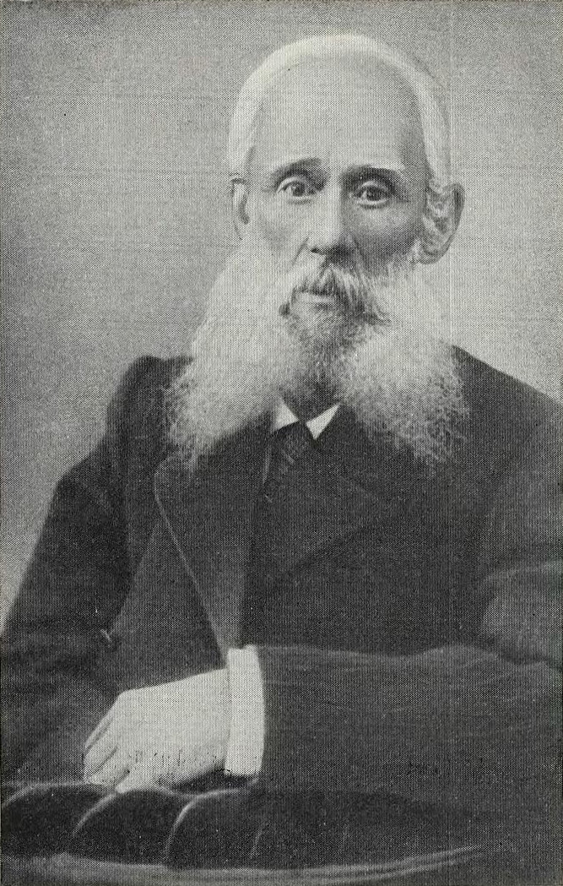
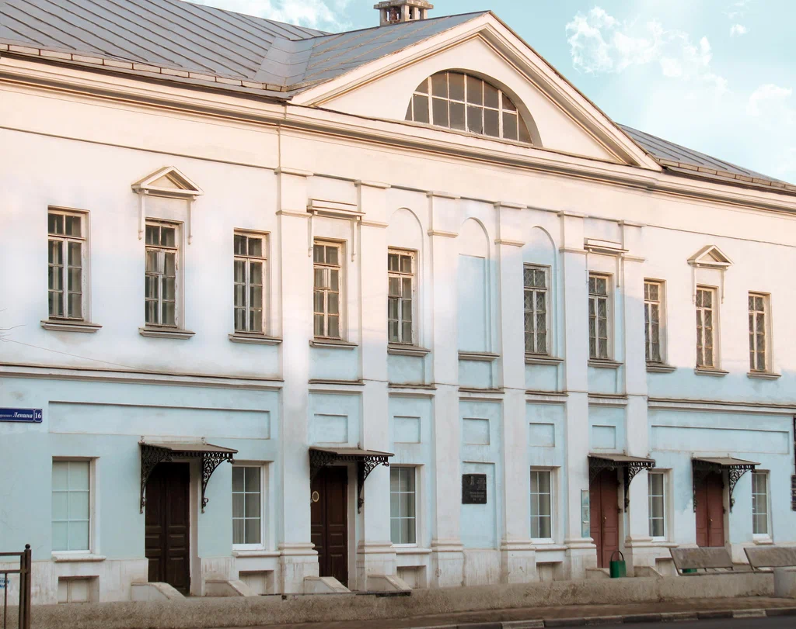

 Николай родился
15 (27) февраля 1828 года в Туле. Его отец, Иван Матвеевич, служил управляющим
у помещиков Кологривовых в имении Медвенки; мать происходила из семьи
потомственных оружейников, она умерла вскоре после рождения Николая.
Для учёбы сына Иван Матвеевич нанял дьячка местной приходской церкви,
который учил его читать на церковно-славянском языке. Учение продолжалось
недолго, так как отец решил, что сыну достаточно уметь подписывать свою фамилию
и кое-как разбирать написанное
Будучи подростком, Белобородов начал интересоваться красильным делом.
После смерти отца Николай открыл в подвале своего дома маленькую красильню.
Красильная мастерская средств давала немного, Белобородов был постоянно в долгах.
Впоследствии он её продал для приобретения гармоник для оркестра.
В 30 лет Н. Белобородов женился на дочери тульского оружейника Юлии Козловой.
От этого брака он имел двух дочерей: Софью и Марию (в замужестве — Кувалдина).
С 11 лет Николай увлёкся игрой на гармони, научившись сначала играть на
однорядной диатонической гармонике, на слух подбирая мелодии некоторых песен.
Белобородов обладал незаурядными способностями, он решил серьёзно заняться
музыкой и добился заметных успехов во владении инструментом. В его доме
собирались друзья по интересу — рабочие казённого завода, гармонные мастера.
Они вместе играли, состязались на переигрыш. Тон этим импровизированным
репетициям неизменно задавал Николай Иванович.
Примитивность существовавших в то время гармоней резко ограничивала
исполнительские возможности Николая Ивановича. Ему хотелось переделать
голоса инструмента так, чтобы на нём можно было исполнять классические
произведения.
У Белобородова возникла идея создания новой модели гармоники.Осенью 1875 года
Николай Иванович договорился с гармонным мастером Леонтием Алексеевичем
Чулковым об изготовлении экспериментального инструмента по разработанным
чертежам. За основу новой гармоники, получивший название хроматическая,
была взята тульская диатоническая однорядка. К первому ряду Белобородов
добавил второй — с недостающими полутонами.
Умер Николай Иванович в 1912 году. Его похороны превратились в многолюдную
процессию. Похоронен Н. И. Белобородов в Туле на Всехсвятском кладбище.
Н. И. Белобородов (1828–1912) известен во всем мире как создатель первой хроматической гармоники. В Туле, где он жил, создали музей в его честь.

Экспозиция была представлена на суд зрителей в марте 1995 года, 25-го числа.
Располагается она в старинном особняке в центральной части города, на пр.
Ленина, 16. Дом выбран не случайно, его построил дед Н. И. Белобородова —
Матвей Макарович. Строительство велось на протяжении 1794—1799 гг. Предок
Николая Ивановича был человеком уважаемым и обеспеченным. Фасад здания музея
оформлен строгим техническим делением. По центру расположены плоские пилястры.
Лучевые фронтоны поднимаются над тройкой окон по центру. Сбоку расположены
оконные проемы с сандриками, а поверх них фронтоны треугольной формы.
Учитывая окна чердака, строение кажется выше. После кончины Матвея Макаровича,
в середине XIX столетия, в особняке поселились его потомки, в числе которых был
и знаменитый новатор. Ему досталась половина второго этажа. В этих комнатах
Николай Иванович готовил к выступлениям домашнее трио, а позднее — коллектив,
созданный им и состоявший из гармонистов. Ведь он был не только «родителем»
хроматической гармоники с клавишами, но и руководителем первого в мировой истории
оркестра гармонистов.
В 1997 году на здании, где жил Н. И. Белобородов, установили памятную табличку.
Его личность сыграла значительную роль в истории развития народно-музыкальной
культуры, а созданный им инструмент стали использовать как в сольном, так и в
коллективном творчестве. Гармоника Белобородова стала важной ступенью в рождении
такого нового инструмента как баян.
Особо ценный экспонат музея — хроматическая гармоника Белобородова, датируемая
1875—1878 гг. Ее изготовитель — Леонтий Алексеевич Чулков, прославленный
мастер гармонных дел. Кроме того, в залах музея представлены семейные фото
из архива Белобородовых, а также знаменитых фабрикантов-гармонщиков из
Тульской губернии — братьев Киселевых, чьи гармоники были распространены и в
России, и за рубежом. В экспозиции собраны документальные сведения, баяны и
гармони, сделанные ПО «Мелодия» (теперь — ООО «Тульская гармонь»), мебель из
XIX века.
Экскурсоводы рассказывают, что Н. И. Белобородов был не только музыкантом-самоучкой,
но и творческой личностью, преподавателем и дирижером. Тут не обходят вниманием и
других известных специалистов в конструкторском деле гармонного производства, работавших
в XIX—XX столетиях. При музейной экспозиции работает музыкальная гостиная, где дают
возможность насладиться классикой и народным творчеством, увидеть фильмы и мультфильмы
с музыкой. Для школьников здесь разработаны разнообразные лекционные и
музейно-педагогические уроки. Тут проходят встречи в музыкальной гостиной, в том числе
с творческими людьми, вечера и концерты.
Как добраться...
Дом-музей Н.И.Бедобородова расположен в самом центре Тулы.
На проспекте Ленина.
Адрес: Тула, пр. Ленина, 16